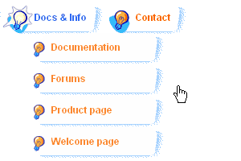

| CONTEXT HELP |
|---|
| Graphical rollover effects |
|
 The look (including images, text and layout) of an item changes when mouse is positioned over i.e. closed folder icon changes to open folder icon. Because of flexibility and artistic nature of this feature it can't be configured via the visual interface this builder offers. |